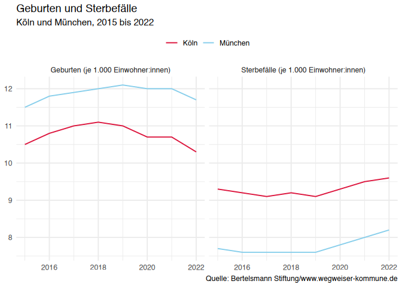

📦 wwkapir is an R package that provides functions to connect to and retrieve data from the Wegweiser Kommune Open Data REST API. It simplifies accessing municipal data for analysis, research, or reporting purposes.
✨ Features
- 📡 Simple functions to query the REST API
- 🔍 Search for available datasets, indicators, and metadata
- 🏙 Retrieve data for specific municipalities or time periods
- 📊 Return results as tidy
data.frames or tibbles
🛠 Installation
# From GitHub (requires devtools or remotes)
remotes::install_github("trekonom/wwkapir")🚀 Getting Started
This is an example on how to retrieve data on births and deaths in Cologne and Munich, tidying the retrieved data and visualizing the data using ggplot2:
library(wwkapir)
library(ggplot2)
# Get data on births and deaths for Cologne and Munich
csv <- wwk_export(
indicator = c("geburten", "sterbefaelle"),
region = c("koeln", "muenchen")
)
dat <- wwk_read_csv(csv)
#> ℹ Using "','" as decimal and "'.'" as grouping mark. Use `read_delim()` for more control.
#> Warning: One or more parsing issues, call `problems()` on your data frame for details,
#> e.g.:
#> dat <- vroom(...)
#> problems(dat)
years <- paste(range(dat$year), collapse = " bis ")
regions <- paste(unique(dat$region), collapse = " und ")
ggplot(dat, aes(x = year, y = value, color = region, group = region)) +
geom_line() +
scale_color_manual(
values = c("#DC143C", "#87CEEB")
) +
facet_wrap(~indicator) +
theme_minimal() +
theme(legend.position = "top") +
labs(
title = "Geburten und Sterbefälle",
subtitle = sprintf("%s, %s", regions, years),
x = NULL, y = NULL, color = NULL,
caption = "Quelle: Bertelsmann Stiftung/www.wegweiser-kommune.de"
)
🔍 What is Wegweiser Kommune?
Wegweiser Kommune is an initiative by the Bertelsmann Stiftung offering open data and information to support local authorities in Germany. It covers topics such as demography, education, finances, health, and sustainability.
⚙️ API Reference
This package wraps the REST API documented here:
📖 https://www.wegweiser-kommune.de/open-data
📜 Terms of Use
The data processed with this package originates from the platform Wegweiser Kommune.
Please make sure to comply with the Terms of Use when accessing or using data from this source.
The contents of Wegweiser Kommune are provided free of charge by the Bertelsmann Stiftung. Due to different licensing conditions of the underlying raw data, which are supplied by various data holders, the indicators are made available under the Data License Germany – Attribution – Version 2.0.
Reproduction and distribution, even in part, must always include the source attribution: “Bertelsmann Stiftung/www.wegweiser-kommune.de”.
Users are responsible for ensuring that their use of the data adheres to these conditions.